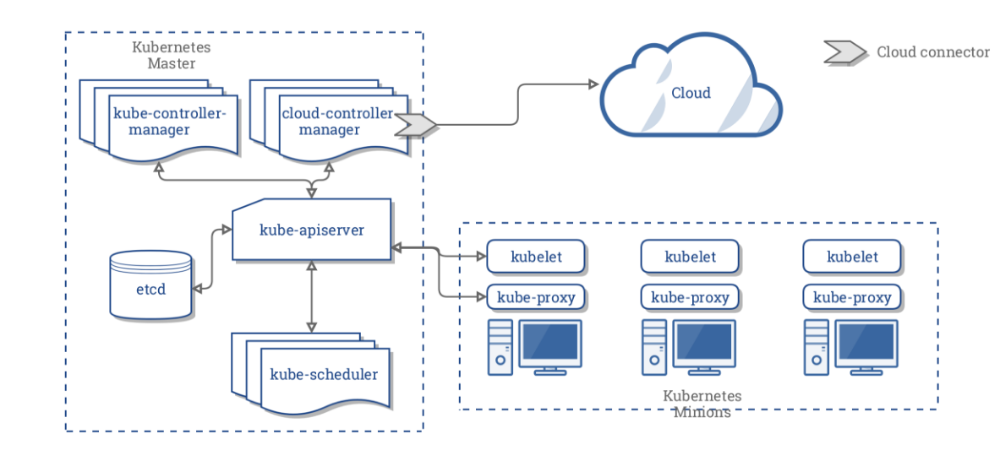

本篇简介了k8s，是对k8s官方文档的摘要
k8s架构

Master Components
kube-apiserver
k8s的前端， 向外界暴露Kubernates APIetcd
高可用的key-value存储，用于保存所有集群数据。kube-scheduler
监视新创建的、还没有分配node的pods，并选择一个node去运行。
调度时考虑的因素包括： 单个及集合的资源需要、软硬件策略的限制、数据本地性等等kube-controller-manager
master中运行controller的部分。逻辑上，每一个controller都是独立的进程，但为了降低复杂度，他们被编译进一个二进制文件、运行在一个进程里。
| cotroller | 作用 |
|---|---|
| Node Controller | 负责发现、响应node下线 |
| Replication Controller | 按replication controller对象的设置，维护正确数量的pod |
| Endpoints Controller | 填入Endpoint对象，意味着连接Service与Pod |
| Service Account&Token Controllers | 为一个新的namespace, 创建默认账户以及API access tokens |
cloud-controller-manager（CCM）
cloud-controller-manager（CCM）是kubernets 1.6发布的功能，它主要运行与基础云提供着相关的controller。而这些controller以前是在kube-controller-manager(KCM)中。现在，我们需要在KCM中失能相关的controller。早期版本中,k8s核心代码依赖于云提供者， CCM的出现使云提供者代码与k8s代码解耦。
CCM主要运行以下Controller(依赖于云提供者)
| controller | 作用 |
|---|---|
| Node Controller | 当node停止响应后，检查云提供者，node是否已经删除 |
| Router Controller | 在基础的云设施中，建立路由 |
Node Components
- kubelet
- kube-proxy
- container runtime
基本概念
k8s包含一些可以代表当前系统状态的抽象，比如部署容器化的应用和工作符合（workloads），与网络及硬件资源的联系等等，这些抽象被定义成了api的对象，这些对象可以分成2部分：基本对象与控制对象（Controllers）
基本对象：
- Pod
- Service
- Volume
- Namespace
控制对象：
- ReplicaSet
- Deployment
- StatefulSet
- Job